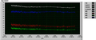

ここのところちと体脂肪率が増え気味か…？見ため的には、脇腹は変わらないが臍の周りが、若干せり上がったと見れば…、見えないこともないかなあ、という程度ではあるのだが。
日常のハードさが若干緩和されたんで、脂肪溜め込みに走ってるのかな？少し運動量を増やさないと駄目かな。といっても、運動だけを目的にしてやってることは何もないんだが。
それにしても、１日以下の単位での変動量が大きい気がする。体脂肪率はともかく、ギャル曽根じゃあるまいし、メシ食ったり出したりはするにせよ、そんなに体重って変動するものかな？ちょっと、溜まったデータを使って調べてみようかな。